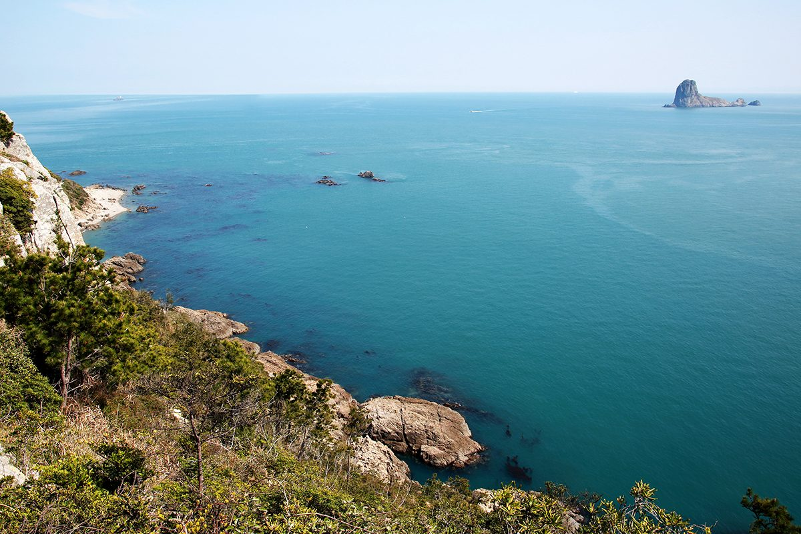

제주 추자해상풍력 2.37GW 해남 신해남변전소 연계 거론…호남 업계 "지역 계통 문제 먼저", 지산지소 원칙 논란

김정호 기후에너지환경노동위원장 "신해남 연결 땐 반도체 클러스터 공급" 취지 발언, 연계는 미확정…호남 변전소 87곳 중 41곳 포화·해상풍력 16.7GW 계통 선점에 배분 우선순위 쟁점
제주 추자도 앞바다 해상풍력의 전력을 전남 해남에 건설 중인 신해남변전소로 잇는 방안이 국회에서 거론되자, 호남 재생에너지 업계가 지역 계통 문제부터 풀어야 한다며 문제를 제기하고 있다. 제주도는 20일 제주를 찾은 국회 기후에너지환경노동위원회에 현재 2.37GW 규모로 계획된 추자해상풍력을 제12차 전력수급기본계획에 반영하고 국가 전력계통에 연결해 달라고 건의했고, 김정호 위원장은 이 자리에서 2034년 가동이 목표인 이 단지가 신해남변전소와 이어지면 호남 반도체 클러스터에 재생에너지를 공급할 수 있다고 말했다. 다만 해남 연계는 정해진 것이 아니며, 사업자 공모가 두 차례 무산돼 제주도가 사업계획을 다시 검토하고 있어 발전 규모와 계통 연결 방식 모두 추가 논의가 필요한 상태다. 정부는 지난달 전력망 혁신대책을 내놓고 10월 1일부터 호남권 계통관리변전소 지정을 풀어 송전 약 27GW, 배전 약 12GW의 수용능력을 더 확보할 계획이지만, 기존 접속 대기 물량이 먼저 처리되고 호남권 변전소 87곳 가운데 포화된 41곳은 ESS 설치와 변전소 신설 일정에 맞춰 2028~2030년에야 단계적으로 풀리며 새 여유용량도 기존 대기 사업자에게 먼저 돌아간다. 2030년까지 호남에서 계통을 선점한 해상풍력만 16.7GW에 이르고 신안·진도 등 서남권 해상풍력과 광주 군공항 부지의 반도체 클러스터도 전력망을 기다리고 있어, 지역 업계는 제주 사업 자체보다 배분 순서가 문제라며 호남의 기존 발전사업과 산업에 필요한 계통 여력을 먼저 확보한 뒤 외부 전력 연계를 따져야 하고 정부가 강조해 온 '지산지소' 원칙과 맞는지도 살펴야 한다고 주장한다. 한 서남권 재생에너지 업계 관계자는 연계 논의가 "전남·광주의 계통 문제 해소와 지역 수요 반영"이 먼저 담보된 뒤에 이뤄져야 한다고 말했다.
시민에너지 관점
호남 변전소 87곳 가운데 41곳이 포화돼 2028~2030년에야 풀리는 상황에서 2.37GW 규모의 섬 전력 연계까지 거론된다면, 한정된 계통을 누가 먼저 쓰느냐가 곧 재생에너지의 이익이 어디에 남느냐를 정하게 된다. 섬과 육지를 잇는 연계가 나라 전체로 보면 효율적이라는 반론도 있겠지만, 독일이 재생에너지법(EEG)에 재생에너지 설비의 계통 우선 접속을 처음부터 적어 두었듯 접속 순서는 시장에 맡길 일이 아니라 공공이 원칙으로 정할 수 있는 문제다. 그 원칙의 맨 앞에 주민이 지분을 가진 마을·협동조합 발전소를 두어야 '지산지소'가 구호에 그치지 않고 지역 소득으로 이어진다. 정부와 한전은 새로 확보하는 여유용량의 배분 기준을 공개하고, 주민참여 사업의 몫을 먼저 떼어 두는 규칙을 제12차 전력수급기본계획 논의에 함께 올려야 한다.
출처: 남도일보 2026-10-27 조태훈 원문 보기
済州・楸子洋上風力2.37GWの海南・新海南変電所への連系案が浮上…湖南業界「地域の系統問題が先」、地産地消の原則めぐり論争
キム・ジョンホ気候エネルギー環境労働委員長が「新海南につなげば半導体クラスターに供給」との趣旨で発言、連系は未確定…湖南の変電所87カ所中41カ所が飽和・洋上風力16.7GWが系統を先取り、配分の優先順位が争点
済州・楸子島（チュジャド）沖の洋上風力の電力を、全羅南道海南（ヘナム）で建設中の新海南変電所につなぐ案が国会で取り沙汰され、湖南（ホナム）の再生可能エネルギー業界は地域の系統問題を先に解決すべきだと問題を提起している。済州道は20日、済州を訪れた国会気候エネルギー環境労働委員会に対し、現在2.37GW規模で計画されている楸子洋上風力を第12次電力需給基本計画に反映し、国の電力系統につないでほしいと要望し、キム・ジョンホ委員長はその場で、2034年の稼働を目指すこの団地が新海南変電所とつながれば湖南の半導体クラスターに再エネを供給できると述べた。ただし海南への連系は決まったものではなく、事業者公募が2度不調に終わって済州道が事業計画を見直しているため、発電規模と系統の接続方式はいずれも追加の議論が必要な段階だ。政府は先月「電力網革新対策」を打ち出し、10月1日から湖南圏の系統管理変電所の指定を解除して、送電で約27GW、配電で約12GWの受け入れ能力を追加で確保する計画だが、既存の接続待ちの案件が優先され、湖南圏の変電所87カ所のうち飽和状態の41カ所はESS設置と変電所新設の日程に合わせて2028〜2030年にようやく段階的に解除され、新たな空き容量も既存の待機事業者に優先して配分される。2030年までに湖南で系統を先取りした洋上風力だけで16.7GWに達し、新安・珍島など西南圏の洋上風力や光州軍空港跡地の半導体クラスターも電力網を待っていることから、地域の業界は済州の事業そのものより配分の順序が問題だとして、湖南の既存発電事業と産業に必要な系統の余力をまず確保したうえで外部電力の連系を検討すべきであり、政府が強調してきた「地産地消」の原則に合うかも見極めるべきだと主張している。西南圏の再エネ業界関係者は、連系の議論は「全南・光州の系統問題の解消と地域需要の反映」がまず担保された後に行われるべきだと語った。
市民エネルギーの視点
湖南の変電所87カ所のうち41カ所が飽和し、2028〜2030年になってようやく解除される状況で、2.37GW規模の島の電力の連系まで取り沙汰されるなら、限られた系統を誰が先に使うかが、再エネの利益がどこに残るかを決めることになる。島と本土を結ぶ連系は国全体で見れば効率的だとの反論もあろうが、ドイツが再生可能エネルギー法（EEG）に再エネ設備の系統優先接続を当初から書き込んだように、接続の順番は市場任せにすることではなく、公共が原則として定められる問題だ。その原則の先頭に住民が持ち分を持つ集落・協同組合の発電所を置いてこそ、「地産地消」はスローガンにとどまらず地域の所得につながる。政府と韓電は新たに確保する空き容量の配分基準を公開し、住民参加事業の取り分を先に確保しておくルールを第12次電力需給基本計画の議論にあわせて載せるべきだ。
出典: 南道日報 2026-10-27 チョ・テフン 原文を読む
济州楸子海上风电2.37GW接入海南新海南变电站之议浮出…湖南业界称"先解决本地电网问题"，引发"地产地消"原则之争
国会气候能源环境劳动委员长Kim Jeong-ho表示"接入新海南可向半导体集群供电"，接入尚未确定…湖南87座变电站中41座饱和、16.7GW海上风电已抢占电网，分配优先顺序成焦点
有关把济州楸子岛附近海域海上风电的电力接入全罗南道海南在建的新海南变电站的方案在国会被提出后，湖南可再生能源业界提出异议，认为应先解决本地电网问题。济州道20日向到访济州的国会气候能源环境劳动委员会建议，把目前规划规模为2.37GW的楸子海上风电纳入第12次电力供需基本计划，并接入国家电网；委员长Kim Jeong-ho当场表示，这一目标2034年投运的园区如果与新海南变电站相连，就能向湖南半导体集群供应可再生能源。不过，接入海南并未确定；由于开发商招标两次落空，济州道正在重新审视项目计划，发电规模和并网方式都还需要进一步讨论。政府上月推出"电网革新对策"，从10月1日起解除湖南地区电网管理变电站的指定，计划新增约27GW输电和约12GW配电的接纳能力；但现有排队并网项目优先处理，湖南87座变电站中已饱和的41座要配合ESS建设和新建变电站的进度，到2028~2030年才逐步解除限制，新增的富余容量也将优先分配给现有排队的开发商。到2030年为止，仅在湖南抢先占用电网的海上风电就达16.7GW，新安、珍岛等西南地区的海上风电和光州军用机场旧址的半导体集群也在等待电网，因此本地业界认为问题不在济州项目本身而在分配顺序，主张应先为湖南现有发电项目和产业确保电网余量，再考虑外部电力接入，也要审视这是否符合政府一贯强调的"地产地消"原则。一位西南地区可再生能源业界人士表示，接入讨论应在"全南、光州电网问题的解决和本地需求的反映"得到保障之后再进行。
市民能源视角
在湖南87座变电站中有41座饱和、要到2028~2030年才能解除限制的情况下，如果连2.37GW规模的海岛电力接入也被提上议程，有限的电网由谁先用，就决定了可再生能源的收益留在哪里。也许有人会反驳说，从全国来看连接海岛与陆地更有效率；但正如德国从一开始就在《可再生能源法》（EEG）中写明可再生能源设施优先并网，并网顺序不应交给市场，而是可以由公共部门按原则来定。只有把居民持股的村庄和合作社电站放在这一原则的最前面，"地产地消"才不会停留在口号上，而能转化为地方收入。政府和韩电应公开新增富余容量的分配标准，并把优先为居民参与项目预留份额的规则一并纳入第12次电力供需基本计划的讨论。
来源: 南道日报 2026-10-27 Cho Tae-hoon 查看原文
Proposal to link Jeju's 2.37GW Chuja offshore wind to Haenam's new substation surfaces; Honam industry says local grid problems must come first, raising questions over "local production, local consumption"
National Assembly climate committee chair Kim Jeong-ho says a Sinhaenam connection could supply a chip cluster, but the link is not decided; with 41 of Honam's 87 substations saturated and 16.7GW of offshore wind already holding grid rights, the order of allocation is at issue
After the idea of feeding power from offshore wind off Chujado island in Jeju into the Sinhaenam substation now being built in Haenam, South Jeolla, was raised at the National Assembly, renewable energy businesses in the Honam region have objected that local grid problems must be solved first. On Oct. 20 Jeju Province asked the Assembly's Climate, Energy, Environment and Labor Committee, which was visiting the island, to include the Chuja offshore wind project, currently planned at 2.37GW, in the 12th Basic Plan for Electricity Supply and Demand and to connect it to the national grid, and committee chair Kim Jeong-ho said at the meeting that if the complex, targeted to start operating in 2034, were linked to the Sinhaenam substation it could supply renewable power to the Honam semiconductor cluster. The Haenam link is not settled, however: two developer tenders have fallen through and Jeju is reviewing the project plan, so both the capacity and the grid connection method still need further discussion. Last month the government announced a grid innovation package and, from Oct. 1, lifted the designation of Honam substations as grid-managed, planning to secure about 27GW of additional transmission capacity and about 12GW of distribution capacity; but projects already waiting to connect come first, the 41 saturated substations among the region's 87 will only be opened in stages in 2028-2030 as energy storage and new substations are built, and newly freed capacity will also go first to developers already in the queue. With 16.7GW of offshore wind alone having secured grid rights in Honam through 2030, and offshore wind off Sinan and Jindo in the southwest as well as a semiconductor cluster planned on the site of Gwangju's military airport also waiting for grid access, local businesses say the problem is not the Jeju project itself but the order of allocation, arguing that grid capacity for Honam's existing power projects and industries should be secured before outside power is considered and that the plan should be checked against the government's own principle of producing and consuming energy locally. A renewable energy industry official in the southwest said any discussion of the link should come only after "solving the grid problems of South Jeolla and Gwangju and reflecting local demand" has been assured.
Citizen Energy View
With 41 of Honam's 87 substations saturated and not set to open until 2028-2030, adding talk of a 2.37GW link from an island means that who gets to use the limited grid first will decide where the benefits of renewable energy end up. Some will argue that connecting the island to the mainland is more efficient for the country as a whole, but just as Germany wrote priority grid connection for renewable installations into its Renewable Energy Sources Act (EEG) from the start, the order of connection is not something to leave to the market; it is a matter the public can settle by principle. Only by putting village and cooperative power plants owned by local residents at the front of that principle will "local production, local consumption" become local income rather than a slogan. The government and KEPCO should publish the criteria for allocating newly freed capacity and put a rule reserving a share for resident-participation projects on the table in the 12th Basic Plan talks.
Source: Namdo Ilbo 2026-10-27 Cho Tae-hoon Read the original